Takbyten · 2 v
Hur gammalt är ditt tak?
Under 20 årÖver 20 år
BOKA BESÖK
Skicka meddelande
Så ser profilen ut med logobanderollen fäst överst och de sju inläggen under. Rutnätet visas 3:4: banderollen är gjord i 3:4 och syns hel, era 4:5-bilder beskärs lite i kanterna (i flödet syns hela bilden).
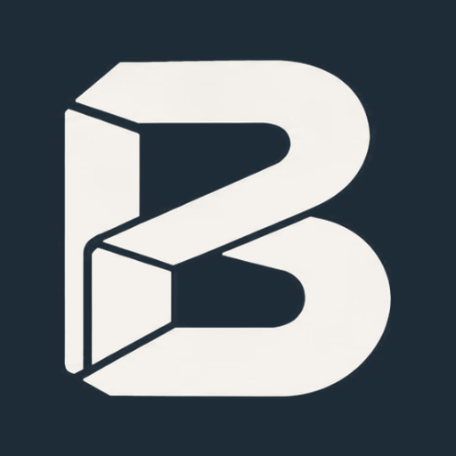
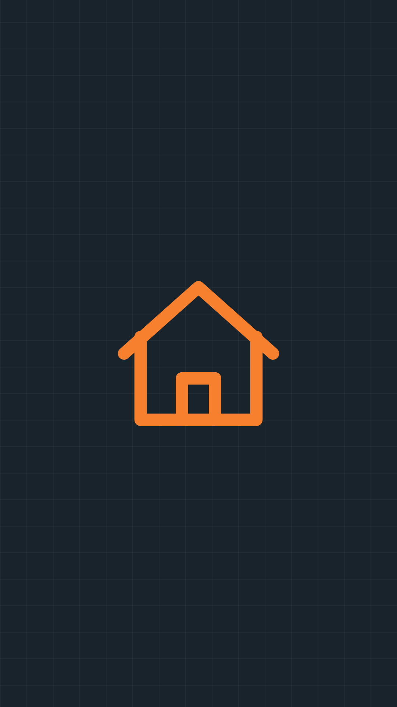
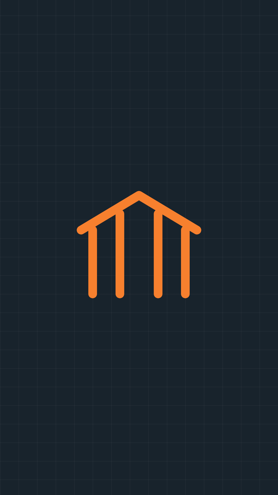
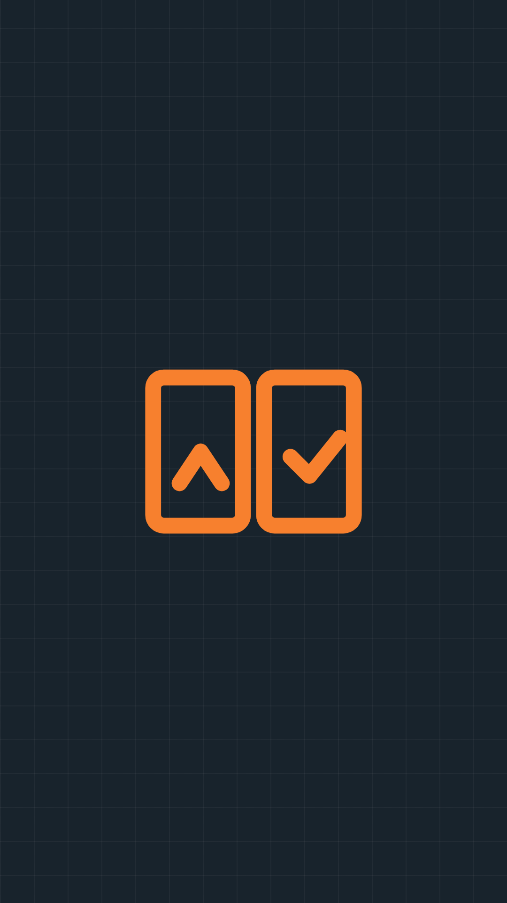
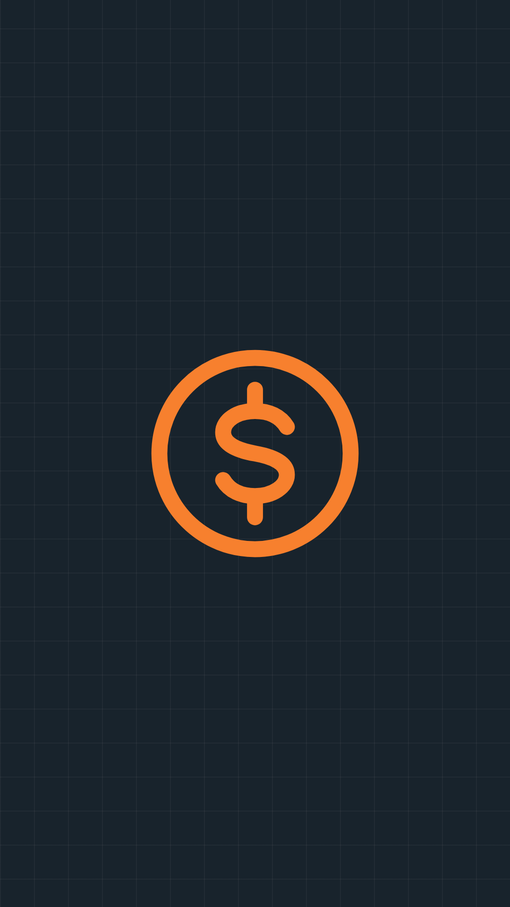
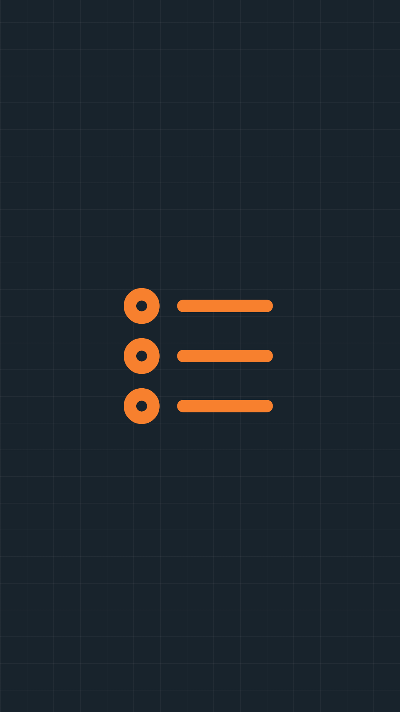
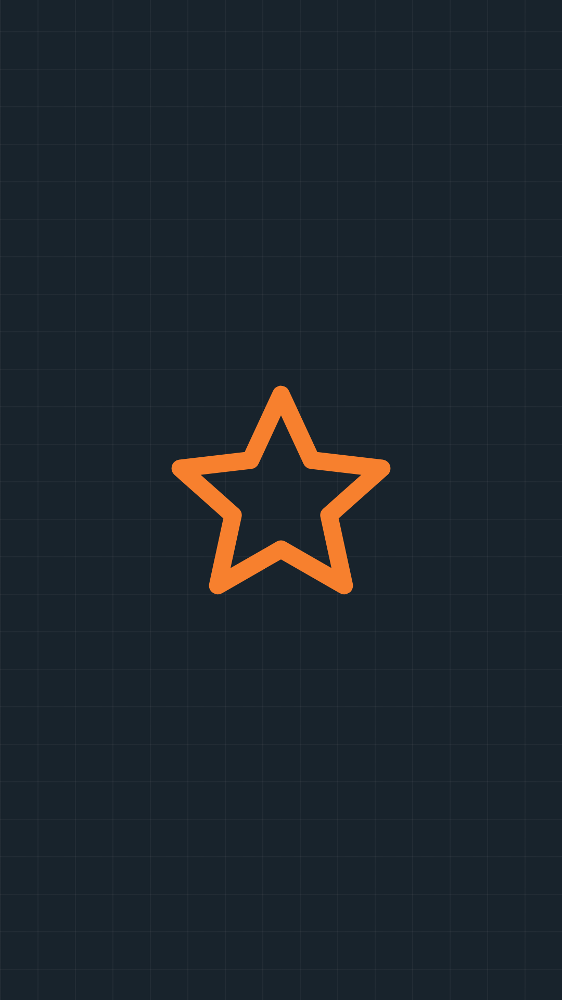
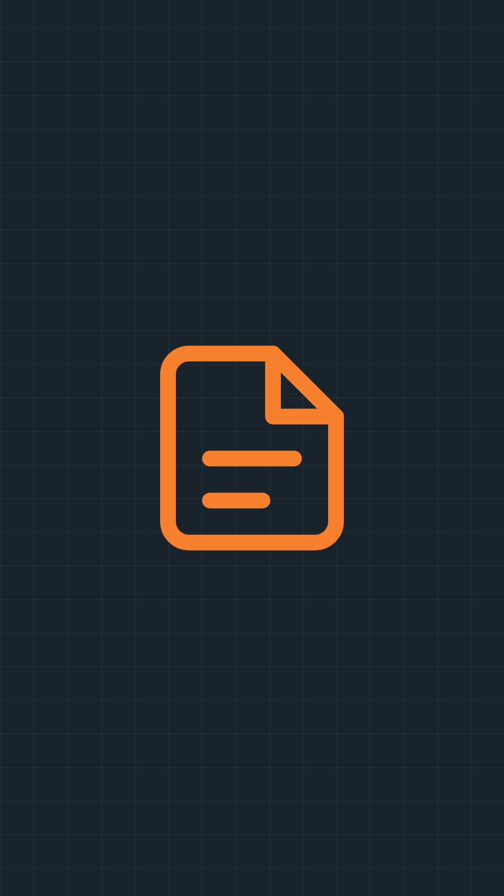
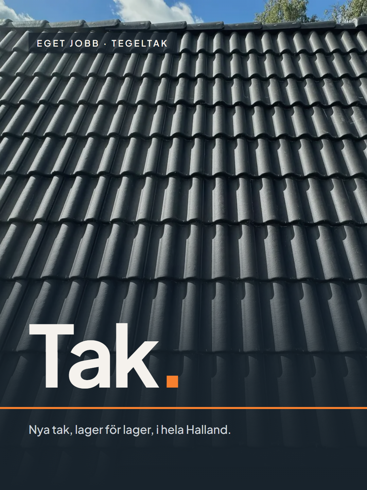
B1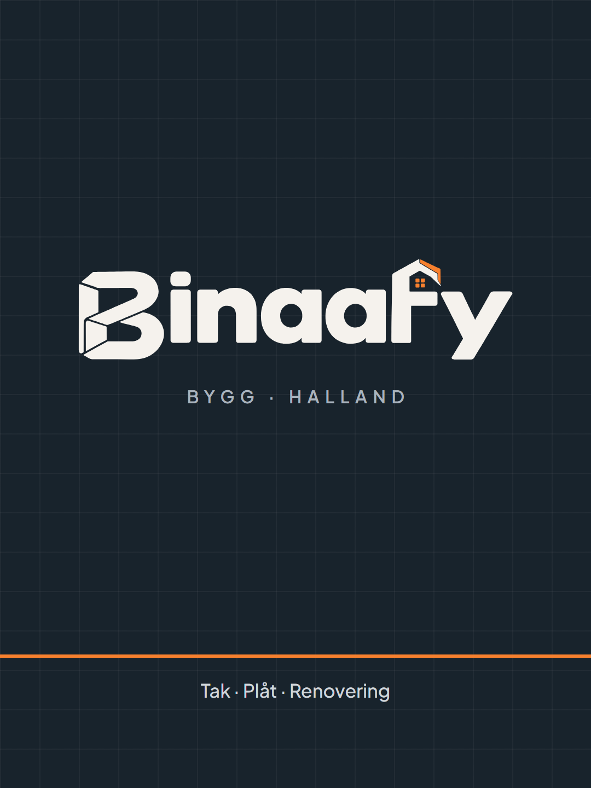
B2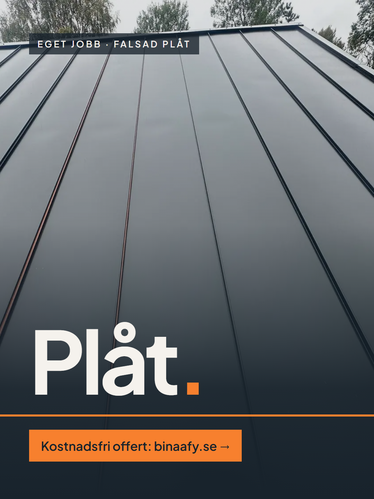
B3 7
7 6
6 5
5 4
4 3
3 2
2 11/3
11/3
Hur gammalt är ditt tak?
| Takbyten | ig-takbyte, ig-intro, ig-detalj-storys + korta klipp från bygget |
| Plåttak | ig-falsad-storyn + omröstningen "Plåt eller tegel?" |
| Före/efter | En story per färdigt jobb – fyll på varje gång |
| ROT | ig-rot + quiz-stickern |
| Så funkar det | ig-process + ig-tecken |
| Omdömen | Skärmdumpar av kundmeddelanden/recensioner (tom tills ni har några – lägg den sist) |
| Offert | En story med länksticker till offertsidan + telefonnummer |